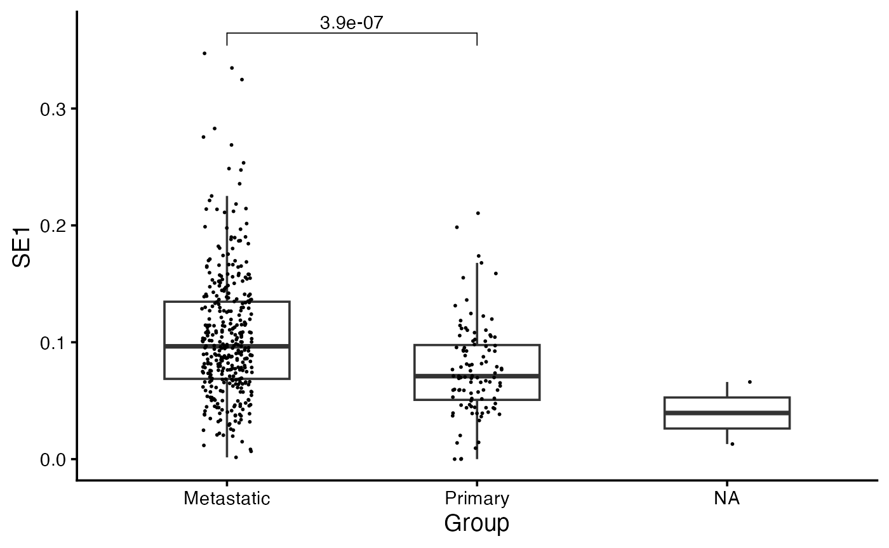
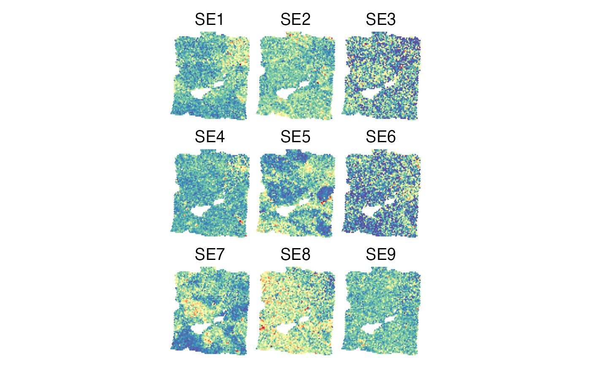
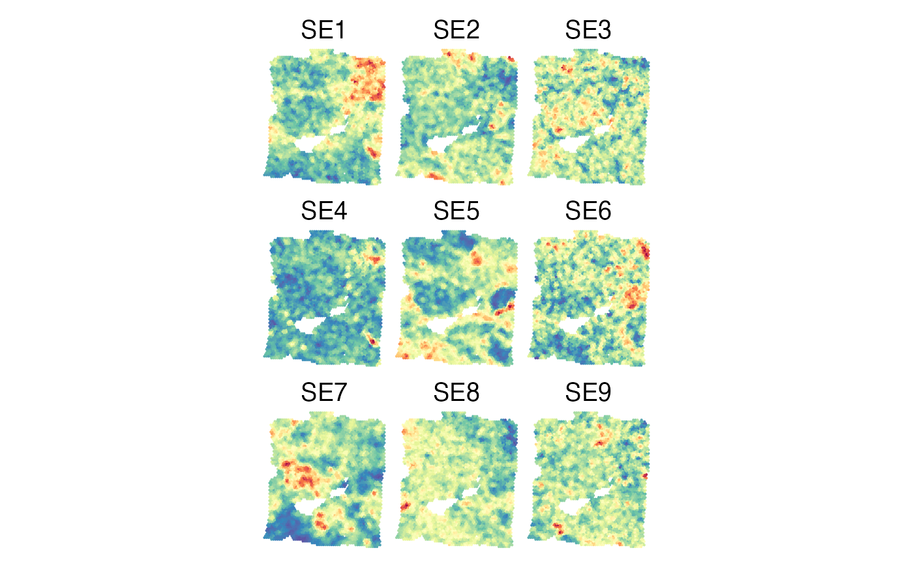

Inferring Spatial Ecotype Abundances from Bulk Gene Expression Data
Source:vignettes/Recovery_Bulk.Rmd
Recovery_Bulk.RmdOverview
This tutorial provides a step-by-step workflow for applying the SpatialEcoTyper framework and a pre-trained deconvolution model to infer the abundances of spatial ecotypes from bulk transcriptomic data, including bulk RNA-seq and Visium spatial transcriptomics data.
First load required packages for this vignette
Inferring SE levels from bulk RNA-seq data
We will use bulk RNA-seq data from TCGA melanoma (SKCM) samples for demonstration. The gene expression matrix is available at SKCM_RNASeqV2.geneExp.tsv, which is a Transcripts Per Million (TPM) matrix obtained from the PanCanAtlas.
Loading bulk expression of TCGA melanoma samples
url <- "https://spatialecotyper.stanford.edu/inc/inc.public.vignettes.php?file=SKCM_RNASeqV2.geneExp.tsv"
download.file(url, destfile = "SKCM_RNASeqV2.geneExp.tsv", mode = "wb", method = "curl")
bulkdata <- fread("SKCM_RNASeqV2.geneExp.tsv", sep = "\t", data.table = FALSE)
rownames(bulkdata) <- bulkdata[, 1] ## Set the first column as row names
bulkdata <- bulkdata[, -1] ## Drop the first column
head(bulkdata[, 1:5]) ## TPM matrix## TCGA.3N.A9WB.06 TCGA.3N.A9WC.06 TCGA.3N.A9WD.06 TCGA.BF.A1PU.01
## A1BG 381.0660 195.182 360.8790 176.3990
## A1CF 0.0000 0.000 0.7092 0.0000
## A2BP1 0.0000 0.000 6.3830 1.2987
## A2LD1 250.1980 160.755 97.1986 163.2340
## A2M 2209.5200 169237.000 18257.9000 6716.4500
## A2ML1 7.2698 0.000 0.0000 7.7922
## TCGA.BF.A1PV.01
## A1BG 216.8470
## A1CF 0.0000
## A2BP1 0.0000
## A2LD1 60.8727
## A2M 1740.5800
## A2ML1 0.5977Loading pre-trained model
Users must provide a pre-trained Non-Negative Matrix Factorization
(NMF) model through the W argument as a numeric matrix.
For standard analyses using the nine spatial ecotypes defined in our study,
the pre-trained model file (SE_deconvolution_model.rds) can
be downloaded from Spatial
EcoTyper web platform. Alternatively, you can upload your bulk
expression data directly to the web platform to run the
deconvolution.
If you have identified new spatial ecotypes, you can train a custom deconvolution model (to derive a custom W matrix) using your own dataset, following Tutorial 7: NMF Model Development for Spatial Ecotype Deconvolution from Bulk Gene Expression Data.
# Note: Load the downloaded file into R using readRDS() to extract the W matrix before passing it to the function
nmf_model = readRDS("SE_deconvolution_model.rds")SE deconvolution
The DeconvoluteSE
function infers SE abundances in bulk tissue samples. By default, the
predicted abundances of SEs and NonSE components for each sample are
normalized to sum to 1. To disable this normalization, set
sum2one = FALSE.
Before prediction, DeconvoluteSE automatically
preprocesses the input data. If the maximum expression value exceeds 80,
the function applies a log₂ transformation. It then standardizes each
gene to have a mean of 0 and a standard deviation of 1. This
standardization can be disabled by setting scale = FALSE.
For reliable standardization, we recommend using at least 20 samples.
For smaller datasets, we recommend combining the samples with a larger
reference dataset during normalization and then applying DeconvoluteSE to
the normalized data.
Deconvolution
sefracs <- DeconvoluteSE(bulkdata, W = nmf_model)Compare SE abundances across sample groups
For demonstration purposes, here we compare the SE abundances between primary and metastatic melanoma samples.
sefracs = as.data.frame(sefracs)
sefracs$Group = NA
sefracs$Group[grepl("01$", rownames(sefracs))] = "Primary"
sefracs$Group[grepl("06$", rownames(sefracs))] = "Metastatic"
ggplot(sefracs[!is.na(sefracs$Group), ], aes(Group, SE1)) +
geom_boxplot(width = 0.5, outlier.shape = NA) +
ggpubr::stat_compare_means(comparisons = list(c("Primary", "Metastatic"))) +
geom_jitter(width = 0.1, size = 0.2) +
theme_classic(base_size = 14)
Inferring SE levels from Visium data
Here, we will demonstrate how to infer SE levels in Visium spots using a breast cancer sample. The expression data can be accessed from: Visium_Breast_Cancer_filtered_feature_bc_matrix.h5, which was obtained from 10x Genomics datasets.
Loading data
First, download and load the expression data into R.
if(!"hdf5r" %in% installed.packages()) BiocManager::install("hdf5r")
require("hdf5r")
url <- "https://spatialecotyper.stanford.edu/inc/inc.public.vignettes.php?file=Visium_Breast_Cancer_filtered_feature_bc_matrix.h5"
download.file(url, destfile = "Visium_Breast_Cancer_filtered_feature_bc_matrix.h5", mode = "wb")
# Load Visium gene expression matrix. Rows are genes, columns are spots.
visiumdat <- Read10X_h5("Visium_Breast_Cancer_filtered_feature_bc_matrix.h5")
# normalize the expression data
visiumdat <- NormalizeData(visiumdat)
meta <- read.csv("https://spatialecotyper.stanford.edu/inc/inc.public.vignettes.php?file=Visium_Breast_Cancer_tissue_positions_list.csv",
header = FALSE, row.names = 1)
colnames(meta) <- c("tissue", "row", "col", "imagerow", "imagecol")
meta <- meta[colnames(visiumdat), ]
head(meta)## tissue row col imagerow imagecol
## AAACAAGTATCTCCCA-1 1 50 102 15632 17782
## AAACACCAATAACTGC-1 1 59 19 17734 6447
## AAACAGAGCGACTCCT-1 1 14 94 7079 16716
## AAACAGGGTCTATATT-1 1 47 13 14882 5637
## AAACAGTGTTCCTGGG-1 1 73 43 21069 9712
## AAACATTTCCCGGATT-1 1 61 97 18242 17091SE deconvolution
The process of SE deconvolution for Visium data is the same as for bulk RNA-seq data described above, using the DeconvoluteSE function.
sefracs <- DeconvoluteSE(visiumdat, W = nmf_model, scale = TRUE)
head(sefracs)## NonSE SE1 SE2 SE3 SE4
## AAACAAGTATCTCCCA-1 0.05232099 0.05041149 0.10012837 0.07571055 0.12156545
## AAACACCAATAACTGC-1 0.18364314 0.09826717 0.09954508 0.15312700 0.17172335
## AAACAGAGCGACTCCT-1 0.07892363 0.18628624 0.05614935 0.14666072 0.08793592
## AAACAGGGTCTATATT-1 0.01745807 0.10309868 0.06961478 0.17559241 0.05575361
## AAACAGTGTTCCTGGG-1 0.15862994 0.02678254 0.23718907 0.01112368 0.08659772
## AAACATTTCCCGGATT-1 0.23539977 0.08190824 0.10742201 0.10051098 0.04179825
## SE5 SE6 SE7 SE8 SE9
## AAACAAGTATCTCCCA-1 0.23954159 0.03325773 0.094210882 0.12824410 0.10460885
## AAACACCAATAACTGC-1 0.04421240 0.03536673 0.032214566 0.07797078 0.10392979
## AAACAGAGCGACTCCT-1 0.05905418 0.08619887 0.191601732 0.02817472 0.07901464
## AAACAGGGTCTATATT-1 0.06850337 0.10667711 0.160825782 0.19010269 0.05237349
## AAACAGTGTTCCTGGG-1 0.24190862 0.07533104 0.007060598 0.06890341 0.08647337
## AAACATTTCCCGGATT-1 0.06918666 0.17898566 0.041112012 0.06446834 0.07920809Visualizing SE abundances across Visium spots
The SpatialView function can be used to visualize SE levels across Visium spots.
## attach the spatial coordinates to the matrix for visualization
gg = as.data.frame(sefracs)
gg = cbind(meta[match(rownames(gg), rownames(meta)), c("imagerow", "imagecol")], gg)
gg$imagerow = -gg$imagerow
colors = rev(RColorBrewer::brewer.pal(11, "Spectral"))
plist = lapply(colnames(gg)[-(1:3)], function(se){
p = SpatialView(gg, by = se, X = "imagecol", Y = "imagerow", pt.size = 0.2) +
coord_fixed() + scale_color_gradientn(colors = colors) +
theme(legend.position = "none", plot.title = element_text(hjust = 0.5)) +
labs(title = se)
p
})
p = patchwork::wrap_plots(plist, nrow = 3)
plot(p)
The SmoothSEAbundances function can be used to smooth SE levels across Visium spots by taking average SE levels across k nearest neighbor spots.
gg_smoothed = SmoothSEAbundances(gg[, -(1:2)], spot_coords = gg[, 1:2],
include.self = TRUE, k = 7,
X = "imagecol", Y = "imagerow")
colors = rev(RColorBrewer::brewer.pal(11, "Spectral"))
plist = lapply(colnames(gg_smoothed)[-(1:3)], function(se){
p = SpatialView(gg_smoothed, by = se,
X = "imagecol", Y = "imagerow", pt.size = 0.2) +
coord_fixed() + scale_color_gradientn(colors = colors) +
theme(legend.position = "none", plot.title = element_text(hjust = 0.5)) +
labs(title = se)
p
})
p = patchwork::wrap_plots(plist, nrow = 3)
plot(p)
Aggregating SE abundances across Visium spots
To compute sample-level SE abundances, Spatial EcoTyper calculates a weighted average of SE abundances across all Visium spots, where each spot is weighted by its inferred number of cells. The resulting SE abundances are then normalized to sum to 1.
ncells = InferNCells(visiumdat)
se_abundance = colSums(sefracs * ncells)
se_abundance = se_abundance / sum(se_abundance)
se_abundance## NonSE SE1 SE2 SE3 SE4 SE5 SE6
## 0.14040332 0.10273023 0.10877977 0.07961834 0.08949085 0.10648313 0.06536730
## SE7 SE8 SE9
## 0.10937745 0.09877298 0.09897662Session info
The session info allows users to replicate the exact environment and identify potential discrepancies in package versions or configurations that might be causing problems.
## R version 4.4.1 (2024-06-14)
## Platform: aarch64-apple-darwin20
## Running under: macOS 26.6.1
##
## Matrix products: default
## BLAS: /Library/Frameworks/R.framework/Versions/4.4-arm64/Resources/lib/libRblas.0.dylib
## LAPACK: /Library/Frameworks/R.framework/Versions/4.4-arm64/Resources/lib/libRlapack.dylib; LAPACK version 3.12.0
##
## locale:
## [1] en_US.UTF-8/en_US.UTF-8/en_US.UTF-8/C/en_US.UTF-8/en_US.UTF-8
##
## time zone: America/Los_Angeles
## tzcode source: internal
##
## attached base packages:
## [1] parallel stats graphics grDevices utils datasets methods
## [8] base
##
## other attached packages:
## [1] hdf5r_1.3.11 dplyr_1.2.1 SpatialEcoTyper_1.0.5
## [4] pals_1.9 ggplot2_4.0.3 NMF_0.28
## [7] Biobase_2.64.0 BiocGenerics_0.50.0 cluster_2.1.6
## [10] rngtools_1.5.2 registry_0.5-1 RANN_2.6.2
## [13] Matrix_1.7-0 data.table_1.18.4 Seurat_5.1.0
## [16] SeuratObject_5.0.2 sp_2.1-4
##
## loaded via a namespace (and not attached):
## [1] RcppAnnoy_0.0.22 splines_4.4.1 later_1.3.2
## [4] tibble_3.3.1 polyclip_1.10-7 fastDummies_1.7.4
## [7] lifecycle_1.0.5 rstatix_0.7.2 sf_1.1-0
## [10] doParallel_1.0.17 globals_0.16.3 lattice_0.22-6
## [13] MASS_7.3-60.2 backports_1.5.0 magrittr_2.0.5
## [16] plotly_4.10.4 sass_0.4.9 rmarkdown_2.28
## [19] jquerylib_0.1.4 yaml_2.3.10 httpuv_1.6.15
## [22] sctransform_0.4.1 spam_2.10-0 spatstat.sparse_3.1-0
## [25] reticulate_1.39.0 cowplot_1.1.3 mapproj_1.2.11
## [28] pbapply_1.7-2 DBI_1.3.0 RColorBrewer_1.1-3
## [31] maps_3.4.2 abind_1.4-8 Rtsne_0.17
## [34] purrr_1.0.2 circlize_0.4.18 IRanges_2.38.1
## [37] S4Vectors_0.42.1 ggrepel_0.9.6 irlba_2.3.5.1
## [40] listenv_0.9.1 spatstat.utils_3.1-0 units_1.0-1
## [43] goftest_1.2-3 RSpectra_0.16-2 spatstat.random_3.3-1
## [46] fitdistrplus_1.2-1 parallelly_1.38.0 pkgdown_2.1.0
## [49] leiden_0.4.3.1 codetools_0.2-20 tidyselect_1.2.1
## [52] shape_1.4.6.1 farver_2.1.2 matrixStats_1.5.0
## [55] stats4_4.4.1 spatstat.explore_3.3-2 jsonlite_1.8.8
## [58] GetoptLong_1.1.1 e1071_1.7-16 Formula_1.2-5
## [61] progressr_0.14.0 ggridges_0.5.6 survival_3.6-4
## [64] iterators_1.0.14 systemfonts_1.1.0 foreach_1.5.2
## [67] tools_4.4.1 ragg_1.3.2 ica_1.0-3
## [70] Rcpp_1.1.2 glue_1.8.1 gridExtra_2.3.1
## [73] xfun_0.52 withr_3.0.3 BiocManager_1.30.25
## [76] fastmap_1.2.0 boot_1.3-30 spData_2.3.4
## [79] digest_0.6.39 R6_2.6.1 mime_0.12
## [82] wk_0.9.5 textshaping_0.4.0 colorspace_2.1-2
## [85] scattermore_1.2 tensor_1.5 dichromat_2.0-0.1
## [88] spatstat.data_3.1-2 tidyr_1.3.1 generics_0.1.4
## [91] class_7.3-22 httr_1.4.7 htmlwidgets_1.6.4
## [94] spdep_1.4-2 uwot_0.2.2 pkgconfig_2.0.3
## [97] gtable_0.3.6 ComplexHeatmap_2.20.0 lmtest_0.9-40
## [100] S7_0.2.2 htmltools_0.5.8.1 carData_3.0-5
## [103] dotCall64_1.1-1 clue_0.3-68 scales_1.4.0
## [106] png_0.1-9 spatstat.univar_3.0-1 knitr_1.48
## [109] rstudioapi_0.16.0 reshape2_1.4.4 rjson_0.2.23
## [112] nlme_3.1-164 proxy_0.4-27 cachem_1.1.0
## [115] zoo_1.8-12 GlobalOptions_0.1.4 stringr_1.5.1
## [118] KernSmooth_2.23-24 miniUI_0.1.1.1 s2_1.1.9
## [121] desc_1.4.3 pillar_1.11.1 grid_4.4.1
## [124] vctrs_0.7.3 ggpubr_0.6.0 promises_1.3.0
## [127] car_3.1-3 xtable_1.8-4 evaluate_0.24.0
## [130] cli_3.6.6 compiler_4.4.1 rlang_1.3.0
## [133] crayon_1.5.3 ggsignif_0.6.4 future.apply_1.11.2
## [136] labeling_0.4.3 classInt_0.4-11 plyr_1.8.9
## [139] fs_1.6.4 stringi_1.8.4 viridisLite_0.4.3
## [142] deldir_2.0-4 gridBase_0.4-7 lazyeval_0.2.2
## [145] spatstat.geom_3.3-2 RcppHNSW_0.6.0 patchwork_1.2.0
## [148] bit64_4.5.2 future_1.34.0 shiny_1.9.1
## [151] highr_0.11 ROCR_1.0-11 broom_1.0.8
## [154] igraph_2.0.3 bslib_0.8.0 bit_4.5.0